StickyBar
Sticky notes that live in your menu bar, one shortcut away, with no account and no cloud. Press ⌥⌘N on a Mac or Ctrl+Alt+N on Windows from any app, write a note or a checklist, and click away. Everything saves as you type and stays on your computer.
macOS
Download for MacDMG · 1.3 MB · macOS 14 Sonoma or laterOpen the DMG and drag StickyBar to Applications. The first time, right-click the app and choose Open, because it isn't notarised.
Windows
Download for WindowsInstaller · 116 MB · Windows 10 or 11, 64-bit Portable zip146 MB · no install neededIf SmartScreen appears, choose More info, then Run anyway. The installer is per-user and needs no admin rights.
- Lives only in the menu bar or system tray, with no Dock icon on a Mac.
- A floating panel that closes when you click anywhere else.
- Plain notes and checklists you can tick right on the card. A finished checklist offers Done · Archive.
- Pin, seven colours, duplicate, archive, and delete with Undo.
- Instant search across titles, text and checklist items.
- Keyboard first: ⌘N new note, ⌘F search, Esc back or close (Ctrl on Windows).
- Full-screen view with a multi-column grid (⌃⌘F, F11 on Windows).
- Light and dark mode, a text-size slider, Increase contrast, and Glass for a frosted panel.
- Opens at login. Local storage only: no login, no network.
The panel
What opens from the menu bar, in light and dark mode. Scroll sideways for more.
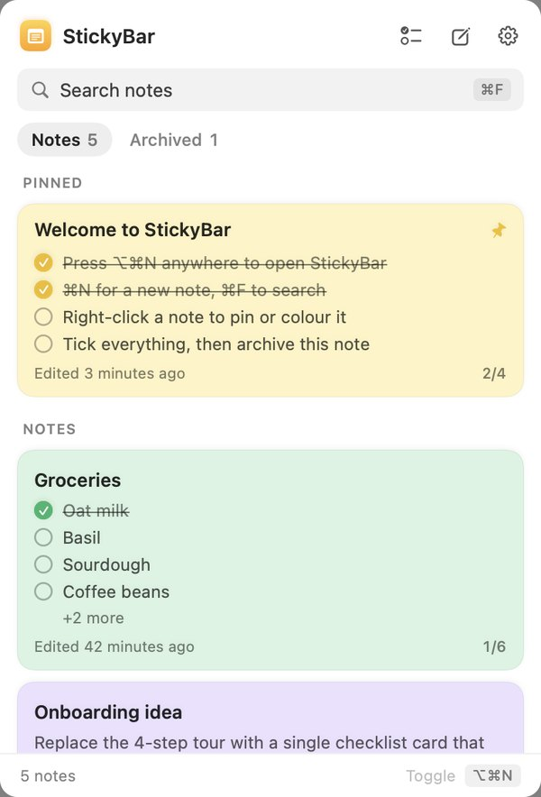
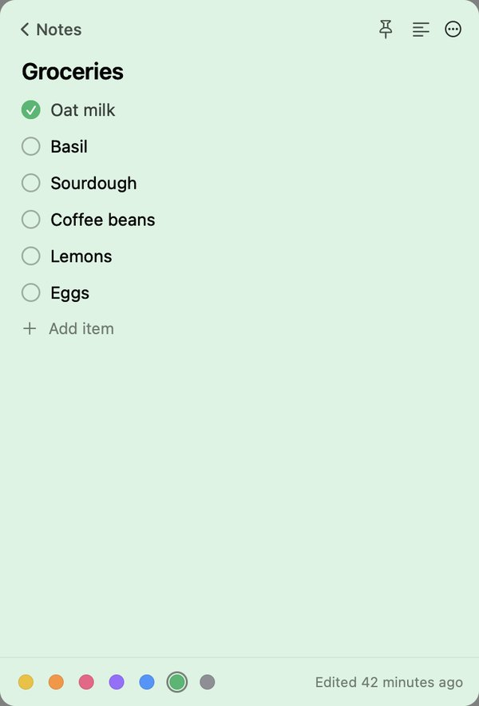
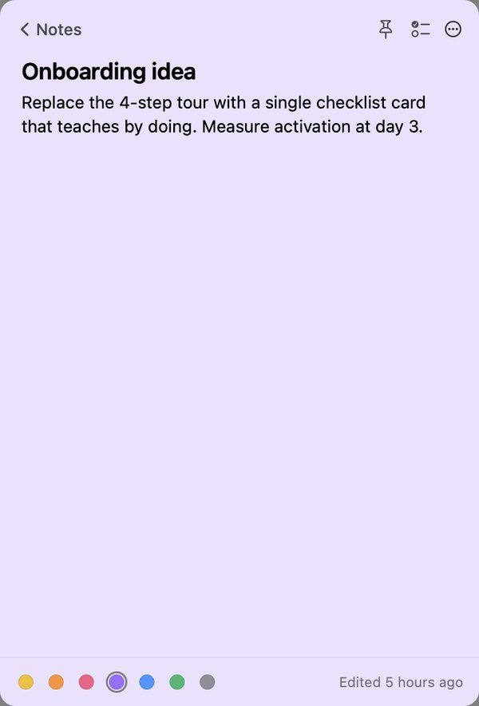
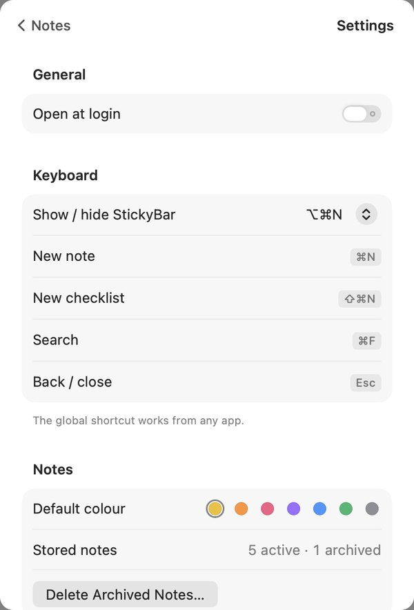
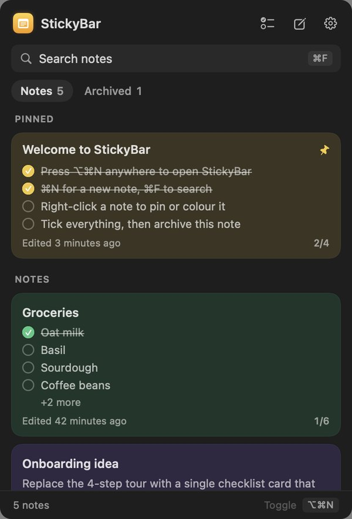
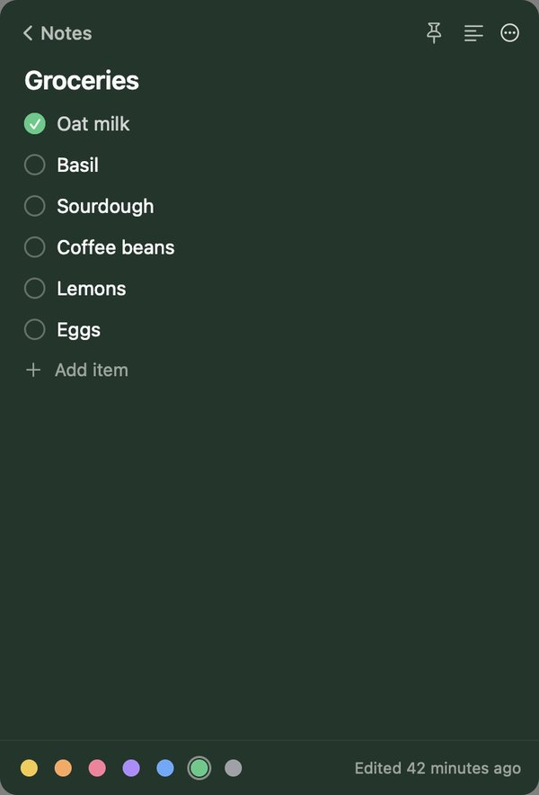
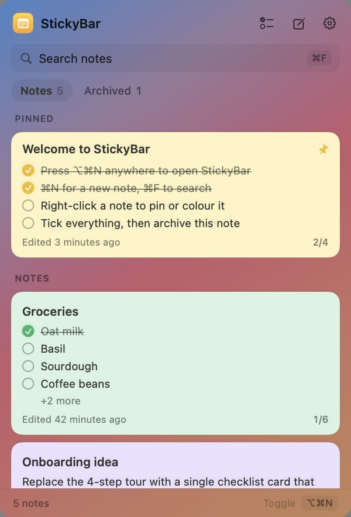
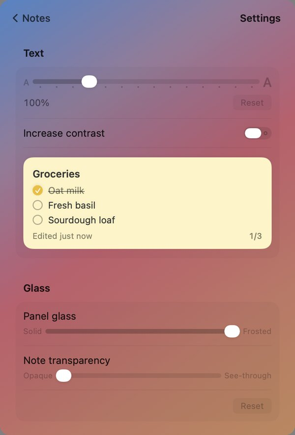
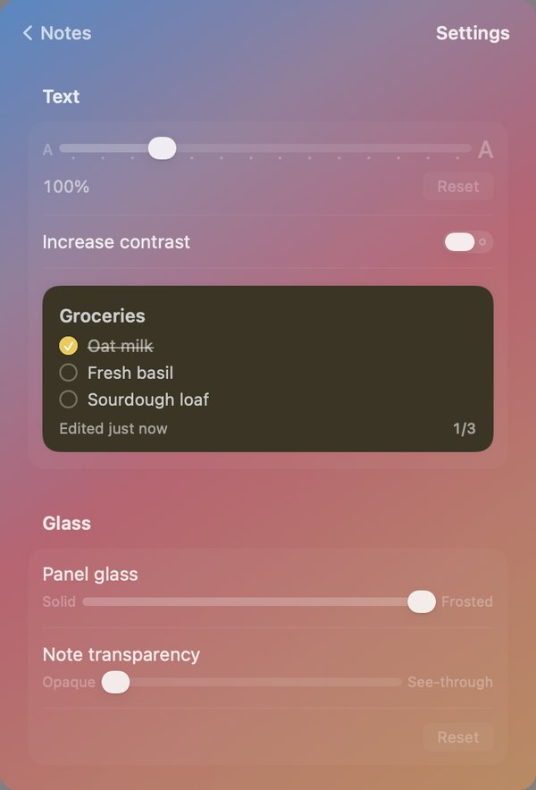
Full screen
For a long session of sorting notes, the panel opens to the whole screen as a grid.
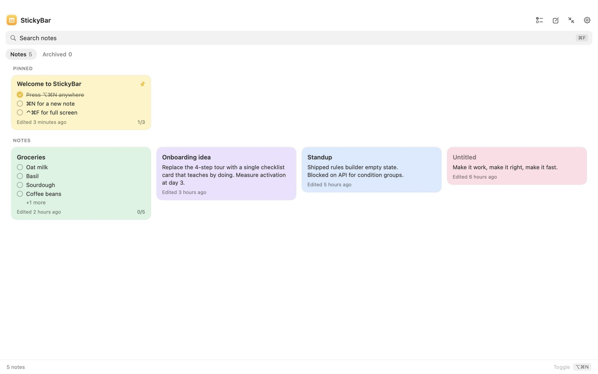
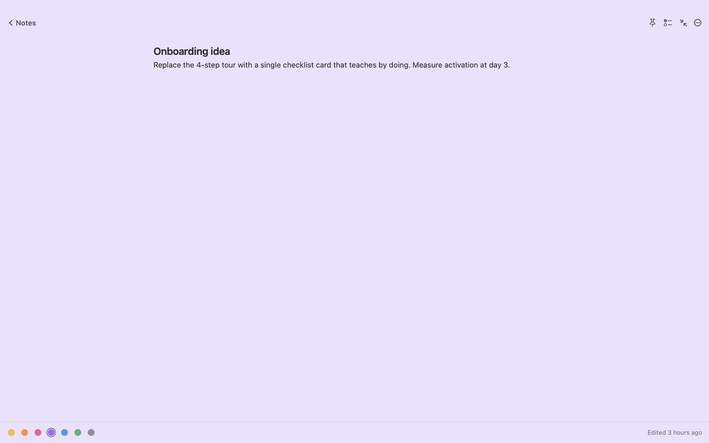
On Windows
The same design as a tray app for Windows 10 and 11, with acrylic glass on Windows 11. These were rendered on a Mac, so they use the Mac system font instead of Segoe UI.
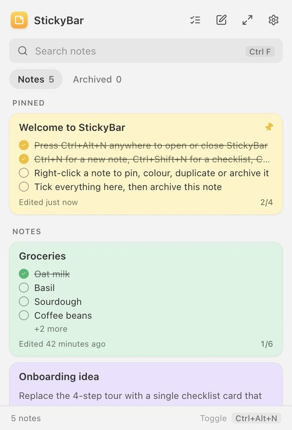
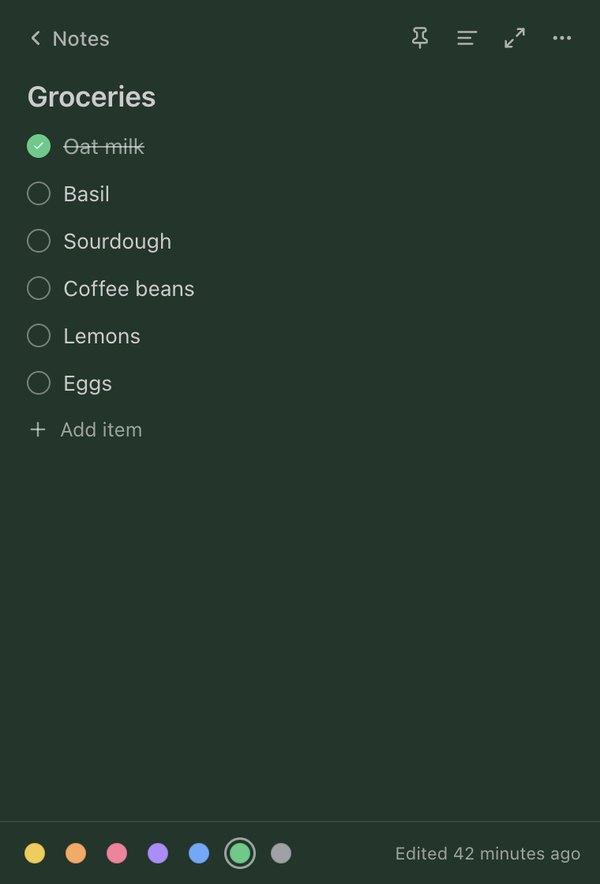
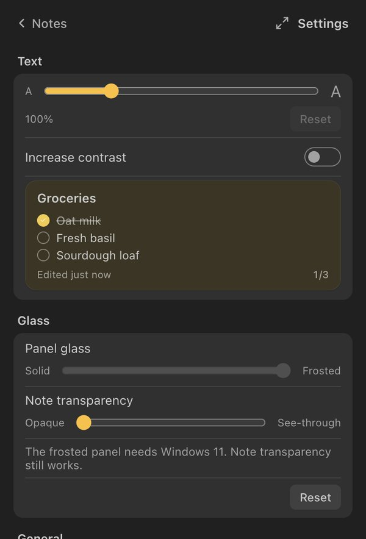
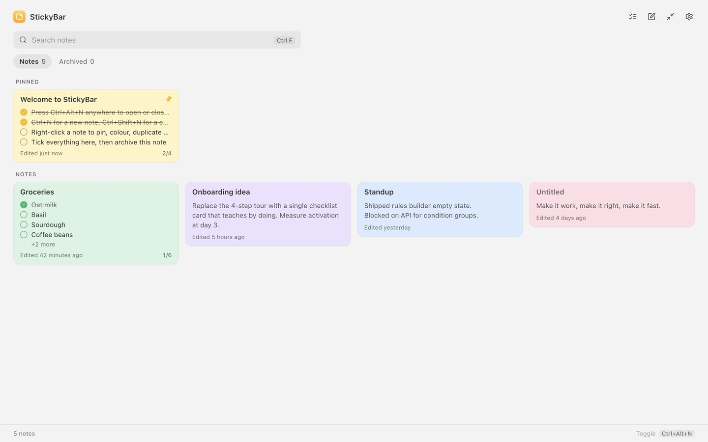
Built with Swift, SwiftUI, SwiftData and AppKit on macOS (sandboxed, macOS 14+), and Electron on Windows. Source and release notes on GitHub ↗.